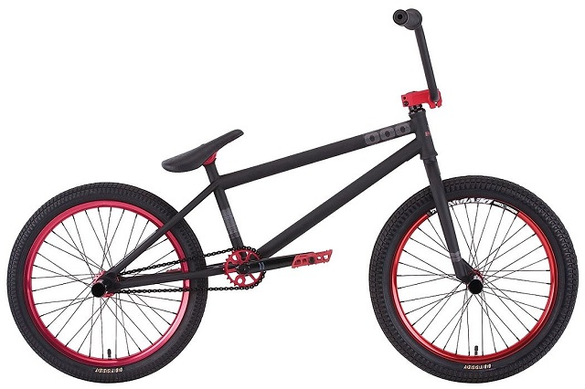

Definicja roweru
Jedno - lub wielośladowy pojazd drogowy napędzany siłą mięśni poruszających się nim osób za pomocą przekładni mechanicznej, wprawianej w ruch (najczęściej) nogami.
Pierwotnie nosił nazwę welocyped oraz bicykl i podobnie nazywany jest w większości nowożytnych języków europejskich. Obecna polska nazwa pochodzi od brytyjskiej firmy Rover, która dawniej produkowała rowery.
Rodzaje rowerów
Górski (MTB)

Rowery MTB są przeznaczone do jazdy po trudnym terenie. Szczególnie dobrze sprawdzą się podczas jazdy po kamienistych ścieżkach i stromych wzniesieniach.
Rower górski to komfortowy jednoślad na kołach 26, 27,5 lub 29 calowych. Profesjonalny rower MTB wyróżnia specjalnie wzmacniana rama oraz koła z szerokimi oponami, które gwarantują lepszą przyczepność podczas jazdy po nierównym terenie.
Tandem
Tandem to rower przeznaczony dla dwóch lub więcej osób siedzących w układzie jedna za drugą. Typowy tandem ma, tak samo jak rower jednoosobowy, jedną ramę i dwa koła, za to każda z osób ma własne: kierownicę, siodełko i pedały
BMX
BMX to rower o szerokich, najczęściej 20 calowych kołach. Jest wyposażony w małe siodełko i tylny hamulec ręczny. Występują trzy rodzaje BMX:
- Race to super lekkie rowery do ścigania się na ziemnych torach wymagających przeskakiwania hopek.
- Flatland można porównać do jazdy figurowej. Zawodnicy wykonują iście cyrkowe figury. Zalicza się do tego jazda na przednim lub tylnym kole, jazda bez użycia pedałów, przeskoki, rotacje kierownicą itp.
- Dirt to dyscyplina polegająca na wykonywaniu trików w powietrzu wybijając się na specjalnych ziemnych hopkach.